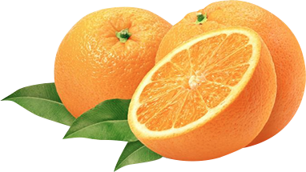

Completely synergize resource relationships via premier niche markets. Professionally cultivate one-to-one customer service with robust ideas. Dynamically innovate resource-leveling customer service for state of the art customer service.
To beautify your face can mask kiwi fruit, kiwi fruit grab, then mash until smooth, and smear your face. After that you usually will feel like a pinch on the skin. This means that the organic acid content in kiwifruit is working. Wait about 15 minutes, then rinse with clean water using the tonic of any kind.
